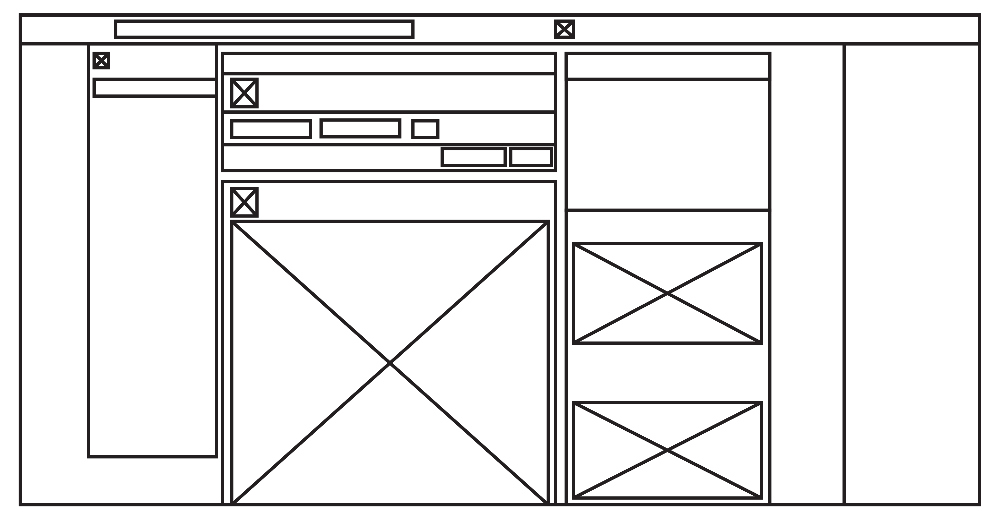
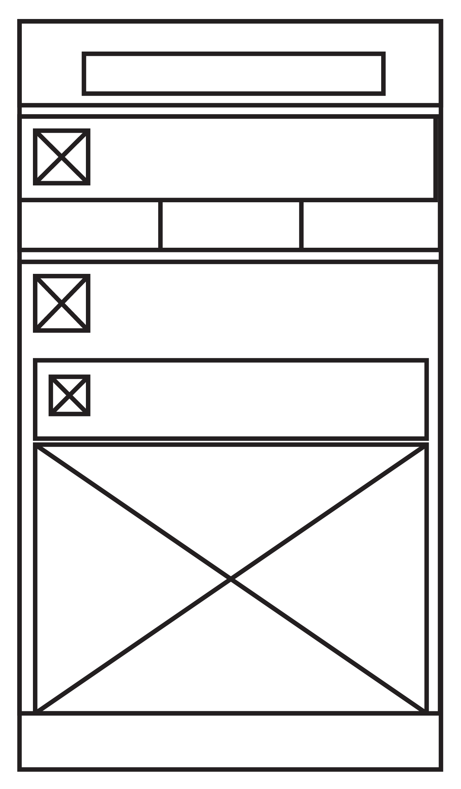

Main image moved below headline
44/55px in FF Yoga Bold
Facebook Ads
29/36 in FF Yoga Bold
Mobile vs Desktop
Text set at 23/34 in FF Yoga Regular
My project aims to convey the difference between how advertisements are presented on desktop and mobile platforms. On the desktop, advertisements are typically placed on the right side of the screen under a title called Ads. On a mobile platform, ads are flawlessy integrated amongst your feed and take in the appearance of pages. Users have a higher chance of discovering and interacting with an ad on their phones than browsing on their computer which can lead to purchases through desktop platform.